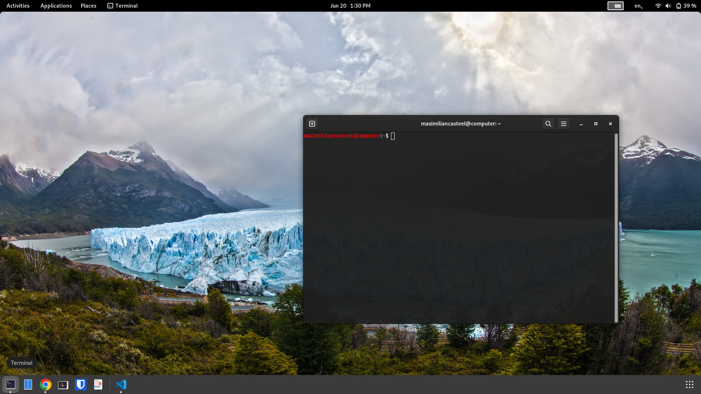
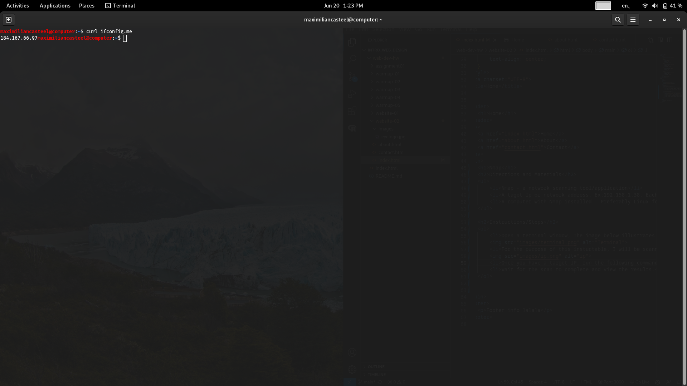
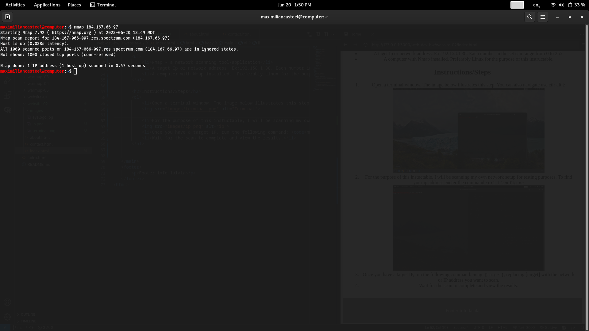

Nmap
Directions and Materials
1. Nmap - a network scanning tool/application
2. A taget Ip or network address. Ex:192.158.1.38. Each number in the set can range from 0 to 255.
3. A computer with Nmap installed. Preferably Linux for the purpose of this instructable.
Instructions/Steps
- Open a terminal window, The image below illustrates this step. You can also navigate use ctlr alt t:

- For the purpose of this instuctable, I will be scanning my own network setup for testing purposes. To find your ip address eneter the command
curl ifconfig.me

- Once you have a target IP, run the following command:
nmap [target], replacing [target] with the network or IP address you want to scan.
- Wait for the scan to complete and view the results. In this instance, I did not have any open ports and the access was denied.

More Info
If you are interested in the above you can check out Nmap from the offical website below!